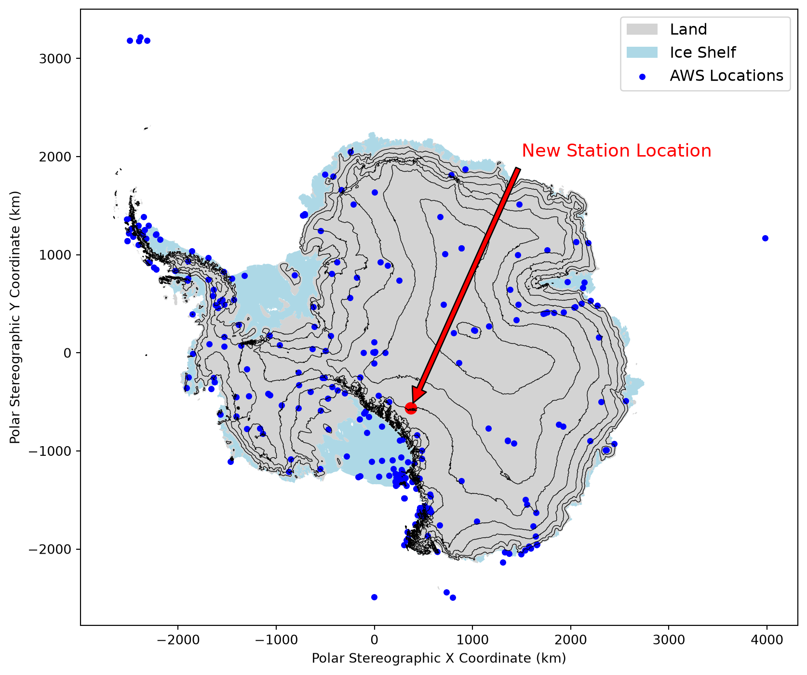
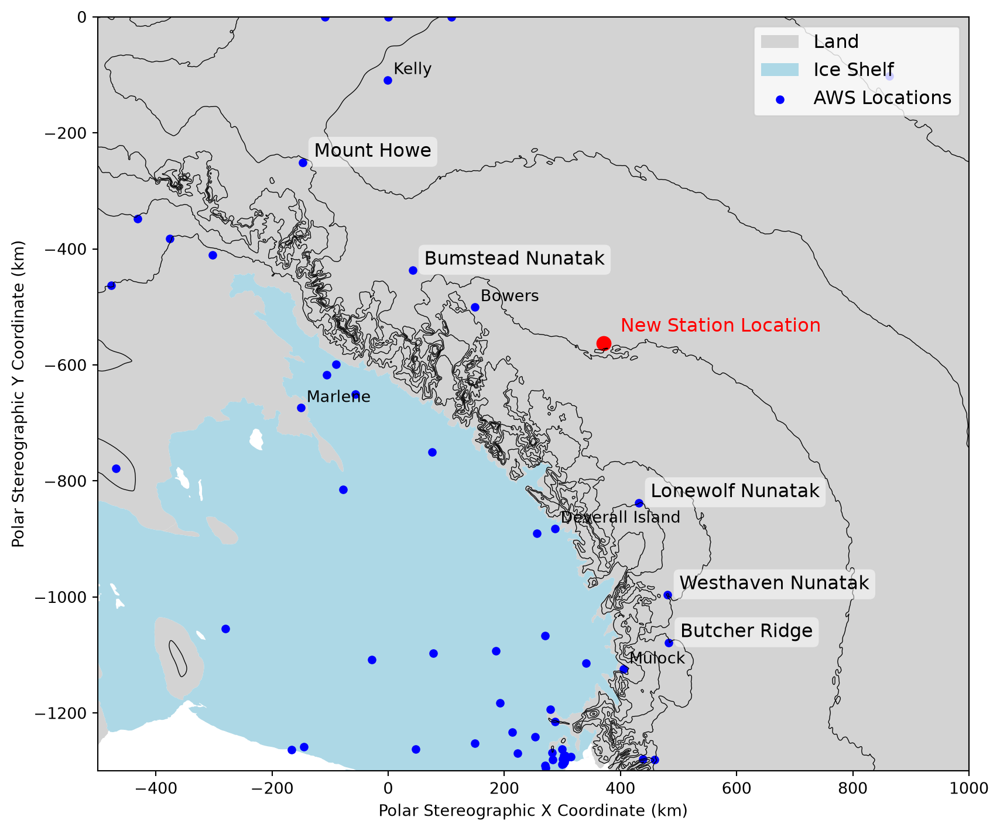
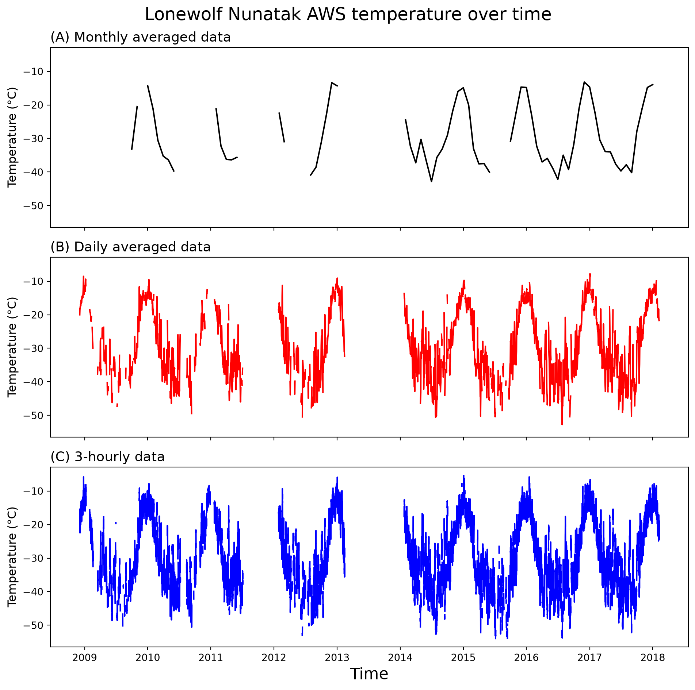
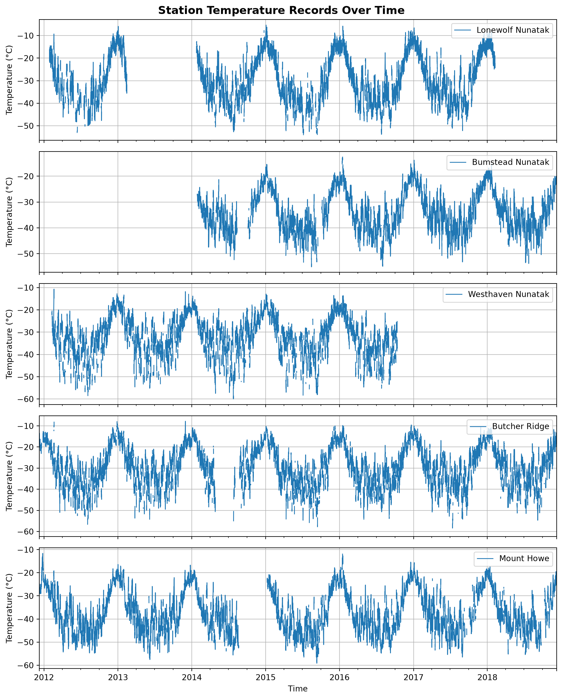
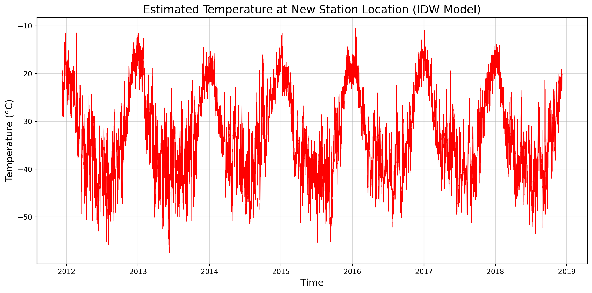
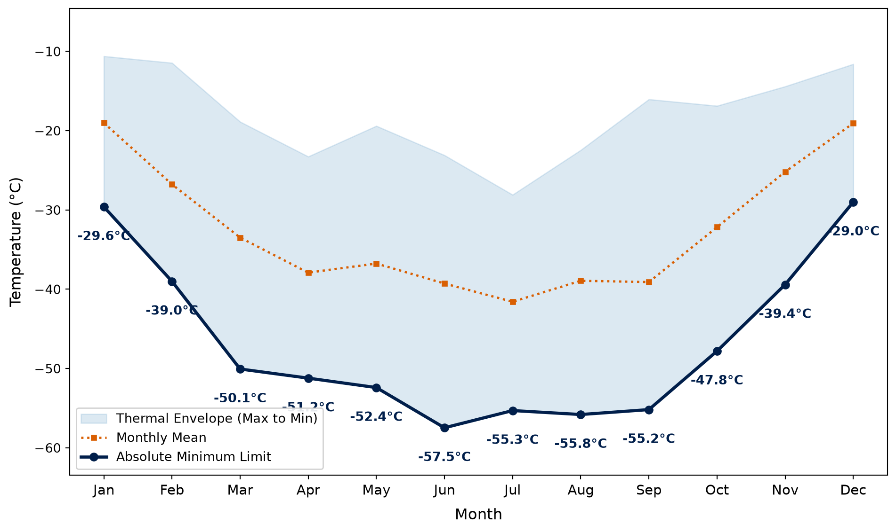
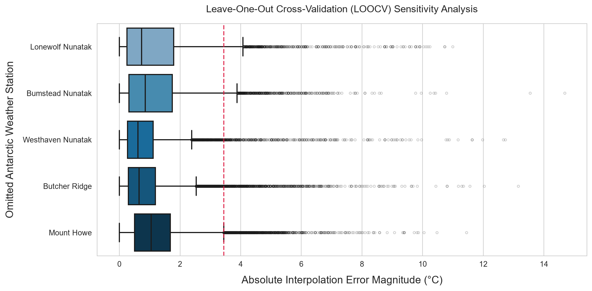

import numpy as np
import pandas as pd
import matplotlib.pyplot as plt
import geopandas as gpd
import seaborn as sns
from pyproj import Geod
from IPython.display import HTML, display
from tabulate import tabulateTender: Antarctic Climate Station Reconstruction
Document overview
Outline
This document outlines the workflow and coding steps for reconstructing climate conditions in a specific region of Antarctica using data from Antarctic Automatic Weather Stations (AWS). The goal is to develop a hindcast model to estimate temperature at a proposed new station location based on the closest suitable AWS stations. The analysis includes mapping AWS locations, calculating distances, plotting temperature data, and creating an Inverse Distance Weighting (IDW) model to estimate temperature at the new station location.
AWS temperature data used for the analysis was downloaded from AMRDC Data Repository on 18/10/2026 and included shapefiles of AWS locations and a dataset of climate variables in different resolutions.
Contour data and surface type for Antarctica was from the SCAR Antarctic Digital Database (ADD) and was downloaded from BAS Data Catalog on 23/09/2026. The contour is “medium resolution vector contours for Antarctica (7.3)” and the surface type is “Medium resolution vector polygons of the Antarctic coastline”. Both are licensed under the Creative Commons Attribution 4.0 International Licence (CC BY 4.0).
Workflow
Below is the workflow for the analysis of the AWS data and the creation of a hindcast model for the new station location.
- Map AWS locations and the New Station location
- Read in data
- Create basic map
- Download and read in better basemap data (ice shelf/contours)
- Create better map
- Calculate distances to proposed new station location
- Calculate geodesic distances (not euclidean distance)
- Find nearest stations that are on land not ice shelf
- Visualise and tidy AWS temperature data
- Read in AWS temperature data for closest stations
- Plot 3 hourly, daily, monthly temperature to compare
- Plot 3-hourly comparisons of closest stations
- Create matrix of temperature data
- Trunctate to overlapping time period (fill in missing data with NA)
- Create model
- Create distance matrix for IDW model
- Create weighted temperature matrix for IDW model
- Create IDW model to estimate temperature at New Station location
- Sensitivity analysis:
- Leave one out analysis to determine how much each station contributes to the model
- Visualise uncertainty in the model (aboslute error magnitude)
Note:
New station location: 83°48’10.68”S and 146°35’20.85”E Converts to WGS84 Antarctic Polar Stereographic coordinates: X = 371154.261133, Y = -562545.764708
Setup
Import necessary libraries for data manipulation and visualization.
Choosing AWS stations
Read in shapefiles
Read in shapefile for Antarctic Weather Stations (AWS) and the base map polygon for Antarctica.
## Load in shapefile data
aws_path = "shapefile/267AWS.shp"
cais_path = "shapefile/CAIS.shp"
polygon_path = "shapefile/cst10_polygon.shp"
countours_path = "shapefile/add_contours_medium_res_v7.3.shp"
coastline_path = "shapefile/add_coastline_medium_res_polygon_v7_12.shp"
aws_data = gpd.read_file(aws_path)
cais_data = gpd.read_file(cais_path)
polygon_data = gpd.read_file(polygon_path)
contours_data = gpd.read_file(countours_path)
coastline_data = gpd.read_file(coastline_path)## Check coordinate reference system - must be on same projection for maps
print("Base Map CRS:", polygon_data.crs)
print("Points CRS Before:", aws_data.crs)
print("cais:", cais_data.crs)
print("contours:", contours_data.crs)
print("coastline:", coastline_data.crs)
# Reproject aws station to match base map
points_projected = aws_data.to_crs(polygon_data.crs)
# Transfer to shared scale and into Km
points_projected["geometry"] = points_projected["geometry"].scale(
xfact=0.001, yfact=0.001, origin=(0, 0)
)
polygon_data["geometry"] = polygon_data["geometry"].scale(
xfact=0.001, yfact=0.001, origin=(0, 0)
)
contours_data["geometry"] = contours_data["geometry"].scale(
xfact=0.001, yfact=0.001, origin=(0, 0)
)
coastline_data["geometry"] = coastline_data["geometry"].scale(
xfact=0.001, yfact=0.001, origin=(0, 0)
)Base Map CRS: EPSG:3031
Points CRS Before: EPSG:4326
cais: EPSG:3031
contours: EPSG:3031
coastline: EPSG:3031Mapping Antarctic AWS
## Create map of Antarctica with AWS locations and proposed new location
fig, ax = plt.subplots(figsize=(10, 10))
# Create a base map
contours_data.plot(ax=ax, color="black", linewidth=0.5)
coastline_data[coastline_data["surface"] == "land"].plot(
ax=ax, color="lightgrey", label="Land"
)
coastline_data[coastline_data["surface"] == "ice shelf"].plot(
ax=ax, color="lightblue", label="Ice Shelf"
)
# Plot AWS stations
points_projected.plot(ax=ax, color="blue", markersize=15, label="AWS Locations")
# Add new station location
ax.scatter(371.154, -562.546, color="red", s=75)
ax.annotate(
"New Station Location",
xy=(371.154, -562.546),
xytext=(1500, 2000),
arrowprops=dict(facecolor="red", shrink=0.02),
fontsize=14,
color="red",
)
# Set axes
ax.set_xlabel("Polar Stereographic X Coordinate (km)")
ax.set_ylabel("Polar Stereographic Y Coordinate (km)")
ax.legend(loc="upper right", fontsize=12)
plt.show()
Calculating Distances Between Stations
## Calculate distances between each AWS location and New Station location
# Use geodesic distances
g = Geod(ellps="WGS84")
distances_list = []
for idx, row in aws_data.iterrows():
lat0, lon0 = -83.803, 146.589 # New Station coordinates
lat1, lon1 = row.geometry.y, row.geometry.x # AWS location coordinates
azimuth1, azimuth2, distance = g.inv(lon0, lat0, lon1, lat1)
distance_km = distance / 1000.0 # meters to kilometers
distances_list.append((distance_km))
# Sort data frame by closest distance
aws_data["distance_km"] = distances_list
aws_sorted = aws_data.sort_values(by=["distance_km"])
print(aws_sorted.head()) no zhandian lat lon elevation F6 \
207 208.0 Bowers -85.20 163.40 2090.0 None
185 186.0 Lonewolf Nunatak -81.34 152.73 1554.0 None
87 88.0 Deverall Island -81.48 161.98 95.0 None
49 50.0 Eric -81.49 163.96 46.0 None
68 69.0 Elaine -83.07 174.24 59.0 None
geometry distance_km
207 POINT (163.4 -85.2) 236.569724
185 POINT (152.73 -81.34) 288.611696
87 POINT (161.98 -81.48) 338.069600
49 POINT (163.96 -81.49) 355.547964
68 POINT (174.24 -83.07) 358.561648 We can sense check the closest stations by looking at the map and seeing if they are indeed close to the new station location, and if they roughly match the distances calculated above. Taking into account that the above distances are geodesic distances, and the map is a projection, so there will be some distortion.
## Extract surface cover information in order to select only close stations on solid land (not ice shelf)
# Perform spatial join and extract surface attribute
joined_temp = gpd.sjoin(
points_projected, coastline_data, how="left", predicate="within"
)
landcover_lookup = joined_temp[["zhandian", "surface"]]
# Join surface data onto original dataframe
aws_sorted_joined = aws_sorted.merge(landcover_lookup, on="zhandian", how="left")
# Check
print(aws_sorted_joined.head()) no zhandian lat lon elevation F6 \
0 208.0 Bowers -85.20 163.40 2090.0 None
1 186.0 Lonewolf Nunatak -81.34 152.73 1554.0 None
2 88.0 Deverall Island -81.48 161.98 95.0 None
3 50.0 Eric -81.49 163.96 46.0 None
4 69.0 Elaine -83.07 174.24 59.0 None
geometry distance_km surface
0 POINT (163.4 -85.2) 236.569724 land
1 POINT (152.73 -81.34) 288.611696 land
2 POINT (161.98 -81.48) 338.069600 land
3 POINT (163.96 -81.49) 355.547964 ice shelf
4 POINT (174.24 -83.07) 358.561648 ice shelf ## Display 10 closest stations that are on solid land (not ice shelf)
# Subset land surface
surface_aws = aws_sorted_joined[aws_sorted_joined["surface"] == "land"]
# Find closest stations
closest_surface_aws = surface_aws.nsmallest(10, "distance_km")
closest_surface_aws = closest_surface_aws[0:10] # remove bowers
print("Closest surface AWS to the new station")
for idx, row in closest_surface_aws.iterrows():
station = row["zhandian"]
distance = row["distance_km"]
print(f"{station}: {distance:.2f} km")Closest surface AWS to the new station
Bowers: 236.57 km
Lonewolf Nunatak: 288.61 km
Deverall Island: 338.07 km
Bumstead Nunatak: 361.28 km
Westhaven Nunatak: 457.90 km
Butcher Ridge: 540.26 km
Marlene: 546.76 km
Mulock: 575.60 km
Kelly: 602.53 km
Mount Howe: 621.15 kmNote: Decisions on final stations are expanded in report, but in brief “Bowers” station was excluded due to record length (< 1 year) whereas “Deverall Island”, “Marlene”, “Mulock”, and “Kelly” stations were excluded due to being coastal stations right next to the ice shelf at lower elevations (Figure 2).
## Create a map of the closest stations to the new station location
fig, ax = plt.subplots(figsize=(10, 10))
# Create same basemap as original map
contours_data.plot(ax=ax, color="black", linewidth=0.5)
coastline_data[coastline_data["surface"] == "land"].plot(
ax=ax, color="lightgrey", label="Land"
)
coastline_data[coastline_data["surface"] == "ice shelf"].plot(
ax=ax, color="lightblue", label="Ice Shelf"
)
# Plot AWS locations
points_projected.plot(ax=ax, color="blue", markersize=20, label="AWS Locations")
# Add new station location to the map
ax.scatter(371.154, -562.546, color="red", s=75)
ax.annotate(
"New Station Location",
xy=(371.154, -562.546),
xytext=(400, -542.546),
fontsize=12,
color="red",
)
# Label chosen stations to model
stations_in_model = [
"Lonewolf Nunatak",
"Bumstead Nunatak",
"Westhaven Nunatak",
"Butcher Ridge",
"Mount Howe",
]
for station_name in stations_in_model:
station_data = points_projected[points_projected["zhandian"] == station_name]
ax.annotate(
station_data["zhandian"].values[0],
xy=(station_data.geometry.x.values[0], station_data.geometry.y.values[0]),
xytext=(
station_data.geometry.x.values[0] + 20,
station_data.geometry.y.values[0] + 10,
),
fontsize=12,
color="black",
bbox=dict(
boxstyle="round,pad=0.3",
edgecolor="none",
facecolor="white",
alpha=0.5, # add circle around the station name
),
)
# Label stations that are not in the model, but were within the ten closest stations
stations_out = [
"Bowers",
"Deverall Island",
"Marlene",
"Mulock",
"Kelly",
]
for station_name in stations_out:
station_data = points_projected[points_projected["zhandian"] == station_name]
ax.annotate(
station_data["zhandian"].values[0],
xy=(station_data.geometry.x.values[0], station_data.geometry.y.values[0]),
xytext=(
station_data.geometry.x.values[0] + 10,
station_data.geometry.y.values[0] + 10,
),
fontsize=10,
color="black",
)
# Set appropriate axes and labels
ax.set_xlim(-500, 1000)
ax.set_ylim(-1300, 0)
ax.set_xlabel("Polar Stereographic X Coordinate (km)")
ax.set_ylabel("Polar Stereographic Y Coordinate (km)")
ax.legend(loc="upper right", fontsize=12)
plt.show()
Model
## Read high temporal resolution data
lonewolf_3h = pd.read_csv("data/3_hourly/Lonewolf Nunatak_3h.csv", encoding="latin-1")
bumstead_3h = pd.read_csv("data/3_hourly/Bumstead Nunatak_3h.csv", encoding="latin-1")
westhaven_3h = pd.read_csv("data/3_hourly/Westhaven Nunatak_3h.csv", encoding="latin-1")
butcher_3h = pd.read_csv("data/3_hourly/Butcher Ridge_3h.csv", encoding="latin-1")
howe_3h = pd.read_csv("data/3_hourly/Mount Howe_3h.csv", encoding="latin-1")## Create a single date-time column for easy analysis and timeseries plots
datasets = {
"Lonewolf Nunatak": lonewolf_3h,
"Bumstead Nunatak": bumstead_3h,
"Westhaven Nunatak": westhaven_3h,
"Butcher Ridge": butcher_3h,
"Mount Howe": howe_3h,
}
# Create datetime for each of the datasets above
for name, df in datasets.items():
df.insert(
0,
"datetime",
pd.to_datetime(
df[["Year", "Month", "Day", "Three-hourly observation time(UTC)"]]
.astype(str)
.agg("-".join, axis=1),
format="%Y-%m-%d-%H",
),
)
# Show time range
print(f"Datetime range for selected stations")
for name, df in datasets.items():
start_date = df["datetime"].min()
end_date = df["datetime"].max()
print(f"{name}: From {start_date} to {end_date}")Datetime range for selected stations
Lonewolf Nunatak: From 2008-12-04 00:00:00 to 2018-02-07 21:00:00
Bumstead Nunatak: From 2014-01-28 00:00:00 to 2019-12-21 21:00:00
Westhaven Nunatak: From 2008-12-09 00:00:00 to 2017-01-02 21:00:00
Butcher Ridge: From 2008-12-09 00:00:00 to 2021-12-31 21:00:00
Mount Howe: From 1992-01-01 00:00:00 to 2020-02-14 21:00:00Resolution test - justification for high resolution data
It is important to justify use of high resolution (and thus more computationally heavy) data. I will show this by comparing the 3-hourly data collection, daily average, and monthly average for the closest AWS.
## Read in monthly and daily datasets for closest station
lonewolf_month = pd.read_csv(
"data/Monthly_75%/Lonewolf Nunatak_month.csv", encoding="latin-1"
)
lonewolf_day = pd.read_csv(
"data/Daily_75%/Lonewolf Nunatak_day.csv", encoding="latin-1"
)
# Create a single date-time column
lonewolf_month.insert(
0,
"date",
pd.to_datetime(
lonewolf_month[["Year", "Month"]].astype(str).agg("-".join, axis=1),
format="%Y-%m",
),
)
lonewolf_day.insert(
0,
"date",
pd.to_datetime(
lonewolf_day[["Year", "Month", "Day"]].astype(str).agg("-".join, axis=1),
format="%Y-%m-%d",
),
)## Create a time series plot comparing monthly, daily, and 3-hourly resolutions over time
fig, (ax1, ax2, ax3) = plt.subplots(3, 1, sharex=True, sharey=True, figsize=(10, 10))
# Monthly
ax1.plot(
lonewolf_month["date"],
lonewolf_month["Temperature(¡æ)"],
label="Air Temperature (°C)",
color="black",
)
# Daily
ax2.plot(
lonewolf_day["date"],
lonewolf_day["Temperature(¡æ)"],
label="Air Temperature (°C)",
color="red",
)
# 3-hourly
ax3.plot(
lonewolf_3h["datetime"],
lonewolf_3h["Temperature(¡æ)"],
label="Air Temperature (°C)",
color="blue",
)
# Create informative labels and subplot titles
fig.suptitle("Lonewolf Nunatak AWS temperature over time", fontsize=18)
ax1.set_title("(A) Monthly averaged data", fontsize=14, loc="left")
ax2.set_title("(B) Daily averaged data", fontsize=14, loc="left")
ax3.set_title("(C) 3-hourly data", fontsize=14, loc="left")
ax3.set_xlabel("Time", fontsize=16)
ax1.set_ylabel("Temperature (°C)", fontsize=12)
ax2.set_ylabel("Temperature (°C)", fontsize=12)
ax3.set_ylabel("Temperature (°C)", fontsize=12)
plt.tight_layout()
plt.show()
Setting up model dataframes
Simplify data to focus on time period with most overlap between stations - allows for more accurate comparison of temperature data and reduces complexity. We also don’t want a distance weighted model that only ever has 1-2 of the 5 stations!
## Create a single dataframe of all AWS temperature records
# Make master timeline
for name, df in datasets.items(): # datasets defined in 'create_datetime' cell
df['datetime'] = pd.to_datetime(df['datetime'])
datasets[name] = df.set_index('datetime')
timeline_df = pd.Index([])
for df in datasets.values():
timeline_df = timeline_df.union(df.index)
# Clean df for simplicity (select only neccessary cols)
aligned_dict = {}
for name, df in datasets.items():
aligned_dict[name] = df["Temperature(¡æ)"].reindex(timeline_df).rename(name)
# Create 2D Matrix Output (datetime as rows, stations as columns)
temp_df = pd.concat(aligned_dict, axis=1)
# Set to a shared timeframe where station datasets overlap
temp_df_trunc = temp_df.loc["2011-12-09 00:00:00":"2018-12-09 00:00:00"]
# Check
print(temp_df_trunc.head()) Lonewolf Nunatak Bumstead Nunatak Westhaven Nunatak \
2011-12-09 00:00:00 NaN NaN NaN
2011-12-09 03:00:00 NaN NaN NaN
2011-12-09 06:00:00 NaN NaN NaN
2011-12-09 09:00:00 NaN NaN NaN
2011-12-09 12:00:00 NaN NaN NaN
Butcher Ridge Mount Howe
2011-12-09 00:00:00 NaN -24.6
2011-12-09 03:00:00 -14.4 -24.9
2011-12-09 06:00:00 -13.4 -25.1
2011-12-09 09:00:00 -14.2 -26.0
2011-12-09 12:00:00 -14.6 -27.3 ## Create timeseries plot of selected AWS temperature records for the chosen time period
fig, axes = plt.subplots(nrows=5, ncols=1, figsize=(10, 2.5 * 5), sharex=True)
# Plot each station
for ax, station_name in zip(axes, temp_df_trunc.columns):
# Plotting the series directly uses the datetime index as the x-axis
temp_df_trunc[station_name].plot(
ax=ax,
label=station_name,
linewidth=1,
legend=True,
)
# Set subplot aesthetics
ax.set_ylabel("Temperature (°C)")
ax.legend(loc="upper right")
ax.grid(True, alpha=0.8)
# Set appropriate plot labels and layout
plt.xlabel("Time")
fig.suptitle("Station Temperature Records Over Time", fontsize=14, weight="bold")
plt.tight_layout()
plt.show()
Create model
Create inverse distance weighting (IDW) model to estimate temperature at the New Station location based on the closest AWS stations. The IDW model will weight the temperature readings from each station inversely proportional to their distance from the New Station location, allowing for a more accurate estimation of temperature at that point. Temperature datasets contain missing values, so the model will handle these appropriately by ignoring them in the weighted average calculation.
## Create distance matrix to match temperature matrix & match missing temperature values
# Map distance data to match the exact column order of temp_df_trunc
distance_mapping = closest_surface_aws.set_index("zhandian")["distance_km"]
distance_row = distance_mapping.reindex(temp_df_trunc.columns).values
# Replicate that row for every timestamp in temp_df_trunc
weight_matrix = np.tile(distance_row, (len(temp_df_trunc), 1))
# Wrap it back into a df with identical rows and columns
weight_df = pd.DataFrame(
weight_matrix, index=temp_df_trunc.index, columns=temp_df_trunc.columns
)
# Keep weight_df values where temp_df_trunc is NOT null; otherwise, set to NaN
updated_weight_df = weight_df.where(temp_df_trunc.notna(), np.nan)
updated_weight_df = 1/ updated_weight_df
updated_weight_df["sum"] = updated_weight_df.sum(axis=1)
# check
print(updated_weight_df.head()) Lonewolf Nunatak Bumstead Nunatak Westhaven Nunatak \
2011-12-09 00:00:00 NaN NaN NaN
2011-12-09 03:00:00 NaN NaN NaN
2011-12-09 06:00:00 NaN NaN NaN
2011-12-09 09:00:00 NaN NaN NaN
2011-12-09 12:00:00 NaN NaN NaN
Butcher Ridge Mount Howe sum
2011-12-09 00:00:00 NaN 0.00161 0.001610
2011-12-09 03:00:00 0.001851 0.00161 0.003461
2011-12-09 06:00:00 0.001851 0.00161 0.003461
2011-12-09 09:00:00 0.001851 0.00161 0.003461
2011-12-09 12:00:00 0.001851 0.00161 0.003461 ## Calculate the final IDW predicted temperature and account for uneven station numbers
# Prevent "sum" totals from messing up the matrix multiplication
station_weights = updated_weight_df.drop(columns=["sum"])
# Calculate the IDW predicted temperature for each time point
weighted_temperatures = temp_df_trunc * station_weights
# Account for sum of weighted values (i.e. account for uneven number of stations at each time point)
sum_weighted_temp = weighted_temperatures.sum(axis=1)
new_station_temp = sum_weighted_temp / updated_weight_df["sum"]
# Final predicted temperature time series
print(new_station_temp.head())2011-12-09 00:00:00 -24.600000
2011-12-09 03:00:00 -19.284341
2011-12-09 06:00:00 -18.842551
2011-12-09 09:00:00 -19.689068
2011-12-09 12:00:00 -20.507726
Freq: 3h, dtype: float64## Create time series plot of the IDW temperature estimate for the New Station location
plt.figure(figsize=(12, 6))
plt.plot(
new_station_temp.index,
new_station_temp.values,
color="red",
label="Estimated Temperature (IDW)",
linewidth=1,
)
plt.title("Estimated Temperature at New Station Location (IDW Model)", fontsize=16)
plt.xlabel("Time", fontsize=14)
plt.ylabel("Temperature (°C)", fontsize=14)
plt.grid(alpha=0.5)
plt.tight_layout()
Summary statistics and output
## Create table of monthly summary statistics for predicted temperature
# Calculate monthly statistics
new_station_temp = new_station_temp.sort_index() # chronological
df_monthly_analysis = pd.DataFrame({"temperature": new_station_temp}) # easier groupings
df_monthly_analysis["month"] = df_monthly_analysis.index.month # extract month
monthly_stats = df_monthly_analysis.groupby("month")["temperature"].agg(
mean_temp="mean",
std_dev="std",
median_temp="median",
min_temp="min",
max_temp="max",
)
# Calculate additional metrics using basic statisitics
monthly_structural_metrics = {}
for month_num in range(1, 13):
month_data = df_monthly_analysis[df_monthly_analysis["month"] == month_num][
"temperature"
]
# Max temperature swing in a single day
max_daily_swing = (
month_data.resample("D")
.apply(lambda x: x.max() - x.min() if len(x) > 0 else np.nan)
.max()
)
# Extreme freezing exposure
pct_below_30 = (month_data < -30).mean() * 100
monthly_structural_metrics[month_num] = {
"max_daily_swing": max_daily_swing,
"pct_below_30": pct_below_30,
}
# Convert additional metrics into a df and combine with core stats
metrics_df = pd.DataFrame.from_dict(monthly_structural_metrics, orient="index")
client_report_df = pd.concat([monthly_stats, metrics_df], axis=1)
# --- DISPLAY THE REPORT ---
# Cleaner names
month_names = {
1: "Jan", 2: "Feb", 3: "Mar", 4: "Apr", 5: "May", 6: "Jun", 7: "Jul", 8: "Aug", 9: "Sep", 10: "Oct", 11: "Nov", 12: "Dec",
}
client_report_df.index = client_report_df.index.map(month_names)
# Content
formatted_report = client_report_df[
["min_temp", "mean_temp", "std_dev", "max_temp", "max_daily_swing", "pct_below_30"]
].round(1)
# Table names
table_df = formatted_report.reset_index()
table_df.columns = ["Month", "Min Temp (°C)", "Mean Temp (°C)", "+/- Std. dev. (°C)", "Max Temp (°C)", "Max Daily Swing (°C)", "Extreme Cold (% < -30°C)"]
# Convert to an HTML table structure
html_table = tabulate(table_df, headers='keys', tablefmt='html', showindex=False)
display(HTML(html_table))| Month | Min Temp (°C) | Mean Temp (°C) | +/- Std. dev. (°C) | Max Temp (°C) | Max Daily Swing (°C) | Extreme Cold (% < -30°C) |
|---|---|---|---|---|---|---|
| Jan | -29.6 | -19 | 3.1 | -10.6 | 10.1 | 0 |
| Feb | -39 | -26.8 | 4.2 | -11.5 | 12 | 23.2 |
| Mar | -50.1 | -33.5 | 4.8 | -18.9 | 13.1 | 78.2 |
| Apr | -51.2 | -37.9 | 5.4 | -23.3 | 13.8 | 92.6 |
| May | -52.4 | -36.8 | 5.7 | -19.4 | 18 | 87.3 |
| Jun | -57.5 | -39.3 | 5.2 | -23.1 | 21.1 | 97.1 |
| Jul | -55.3 | -41.6 | 4.9 | -28.1 | 15 | 99.3 |
| Aug | -55.8 | -38.9 | 5.7 | -22.4 | 16.7 | 91.8 |
| Sep | -55.2 | -39.1 | 6.5 | -16 | 19.5 | 91.5 |
| Oct | -47.8 | -32.2 | 4.8 | -16.9 | 14.5 | 67 |
| Nov | -39.4 | -25.2 | 3.9 | -14.4 | 7.4 | 10.9 |
| Dec | -29 | -19.1 | 2.7 | -11.6 | 9.7 | 0 |
## Create a timeseries of important monthly statistics
# Ensure you are using the monthly stats aggregated previously
month_labels = [
"Jan", "Feb", "Mar", "Apr", "May", "Jun", "Jul", "Aug", "Sep", "Oct", "Nov", "Dec",
]
x_indices = np.arange(len(month_labels))
mins = client_report_df["min_temp"].values
means = client_report_df["mean_temp"].values
maxes = client_report_df["max_temp"].values
# Create figure
plt.figure(figsize=(10, 6))
# Plot shaded thermal envelope (min - max per month)
plt.fill_between(
x_indices,
mins,
maxes,
color="#74a9cf",
alpha=0.25,
label="Thermal Envelope (Max to Min)",
)
# Plot means
plt.plot(
x_indices,
means,
color="#d95f02",
linestyle=":",
linewidth=1.8,
marker="s",
markersize=4,
label="Monthly Mean",
)
# Highlight extreme minimum and label points with exact temp
plt.plot(
x_indices,
mins,
color="#011f4b",
linewidth=2.5,
marker="o",
markersize=6,
label="Absolute Minimum Limit",
)
for x, m_val in zip(x_indices, mins):
plt.text(
x,
m_val - 3,
f"{m_val:.1f}°C",
ha="center",
va="top",
fontsize=10,
weight="bold",
color="#011f4b",
)
# Set clean aesthetics and appropriate labels
plt.xticks(x_indices, month_labels, fontsize=11)
plt.xlim(-0.5, 11.5)
plt.ylim(mins.min() - 6, maxes.max() + 6)
plt.xlabel("Month", fontsize=12, labelpad=8)
plt.ylabel("Temperature (°C)", fontsize=12, labelpad=8)
plt.legend(
loc="lower left",
frameon=True,
facecolor="white",
framealpha=0.9,
)
plt.tight_layout()
plt.show()
Sensitivity Analysis
## Perform a 'leave-one-out cross-validation' analysis to evaluate model
## Drops one station at a time, reruns IDW, and assess how different predicted value is at each point
# List of your 5 stations
stations = list(temp_df_trunc.columns)
uncertainty_results = {}
# 1. LOOP THROUGH: Drop one station at a time
for dropped_station in stations:
# Filter out the dropped station from the available data
remaining_stations = [s for s in stations if s != dropped_station]
# --- Re-run your specific IDW logic with just the remaining stations ---
sub_distance_mapping = closest_surface_aws.set_index("zhandian")["distance_km"]
sub_distance_row = sub_distance_mapping.reindex(remaining_stations).values
sub_weight_matrix = np.tile(sub_distance_row, (len(temp_df_trunc), 1))
# Calculate new sub-weights (using power of 2)
epsilon = 1e-6
sub_idw_weights = 1.0 / ((sub_weight_matrix + epsilon) ** 2)
# Extract sub-temperatures and handle NaNs
sub_temp_matrix = temp_df_trunc[remaining_stations].values
sub_is_nan = np.isnan(sub_temp_matrix)
sub_idw_weights[sub_is_nan] = 0
sub_temp_matrix_clean = np.nan_to_num(sub_temp_matrix, nan=0.0)
# Compute the sub-model predictions
sub_weighted_sum = np.sum(sub_temp_matrix_clean * sub_idw_weights, axis=1)
sub_sum_of_weights = np.sum(sub_idw_weights, axis=1)
sub_sum_of_weights[sub_sum_of_weights == 0] = np.nan
# This is your altered model baseline missing one node
sub_model_prediction = sub_weighted_sum / sub_sum_of_weights
# QUANTIFY VARIANCE: Compare directly against your master new_station_temp
model_delta = sub_model_prediction - new_station_temp.values
# Capture core summary statistics of the error/deviation
uncertainty_results[dropped_station] = {
"Mean Absolute Bias (°C)": np.nanmean(np.abs(model_delta)),
"Max Volatility Spike (°C)": np.nanmax(np.abs(model_delta)),
"95th Percentile Deviation (°C)": np.nanpercentile(np.abs(model_delta), 95)
}
# Format mean bias as table
sensitivity_df = pd.DataFrame.from_dict(uncertainty_results, orient="index").round(2)
print(sensitivity_df.to_string()) Mean Absolute Bias (°C) Max Volatility Spike (°C) 95th Percentile Deviation (°C)
Lonewolf Nunatak 1.14 10.99 3.25
Bumstead Nunatak 1.16 14.68 3.18
Westhaven Nunatak 0.84 12.72 2.29
Butcher Ridge 0.93 13.16 2.85
Mount Howe 1.26 11.44 3.44## Visualise LOOCV sensitivity analysis showing magnitude of error at each time point
# Regenerate the raw error distributions for each station
stations = list(temp_df_trunc.columns)
raw_errors_dict = {}
for dropped_station in stations:
remaining_stations = [s for s in stations if s != dropped_station]
# Run the sub-model math
sub_distance_mapping = closest_surface_aws.set_index("zhandian")["distance_km"]
sub_distance_row = sub_distance_mapping.reindex(remaining_stations).values
sub_weight_matrix = np.tile(sub_distance_row, (len(temp_df_trunc), 1))
epsilon = 1e-6
sub_idw_weights = 1.0 / ((sub_weight_matrix + epsilon) ** 2)
sub_temp_matrix = temp_df_trunc[remaining_stations].values
sub_is_nan = np.isnan(sub_temp_matrix)
sub_idw_weights[sub_is_nan] = 0
sub_temp_matrix_clean = np.nan_to_num(sub_temp_matrix, nan=0.0)
sub_weighted_sum = np.sum(sub_temp_matrix_clean * sub_idw_weights, axis=1)
sub_sum_of_weights = np.sum(sub_idw_weights, axis=1)
sub_sum_of_weights[sub_sum_of_weights == 0] = np.nan
sub_model_prediction = sub_weighted_sum / sub_sum_of_weights
# Calculate absolute delta over the continuous timeline
# Passing absolute errors visualizes the magnitude of uncertainty
raw_errors_dict[dropped_station] = np.abs(
sub_model_prediction - new_station_temp.values
)
# Convert dictionary to a df for Seaborn formatting
errors_df = pd.DataFrame(raw_errors_dict)
# Create the horizontal boxplot
plt.figure(figsize=(11, 5.5))
sns.set_style("whitegrid")
box_palette = ["#74a9cf", "#3690c0", "#0570b0", "#045a8d", "#023858"]
sns.boxplot(
data=errors_df,
orient="h",
palette=box_palette,
linewidth=1.5,
flierprops=dict(alpha=0.2),
fliersize=3,
)
# Create appropriate axes, labels, aesthetics
plt.title(
"Leave-One-Out Cross-Validation (LOOCV) Sensitivity Analysis",
fontsize=13,
pad=15,
)
plt.xlabel("Absolute Interpolation Error Magnitude (°C)", fontsize=14, labelpad=10)
plt.ylabel("Omitted Antarctic Weather Station", fontsize=14, labelpad=10)
plt.axvline(
x=3.44, color="crimson", linestyle="--", alpha=0.8
) # largest 95th percentil deviation
plt.tight_layout()
plt.show()